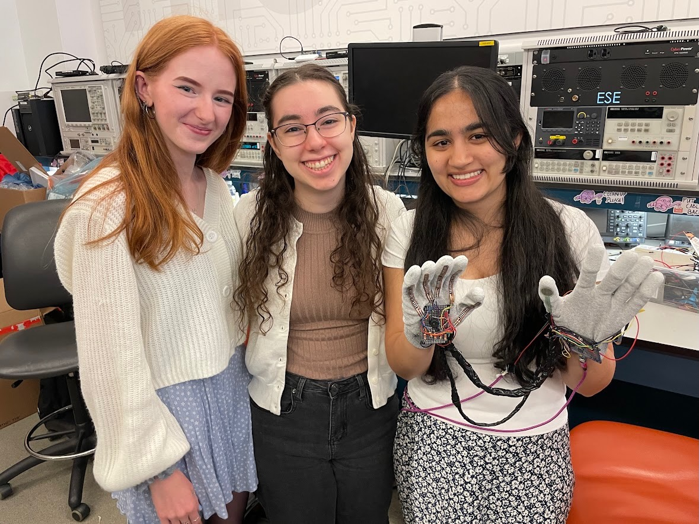
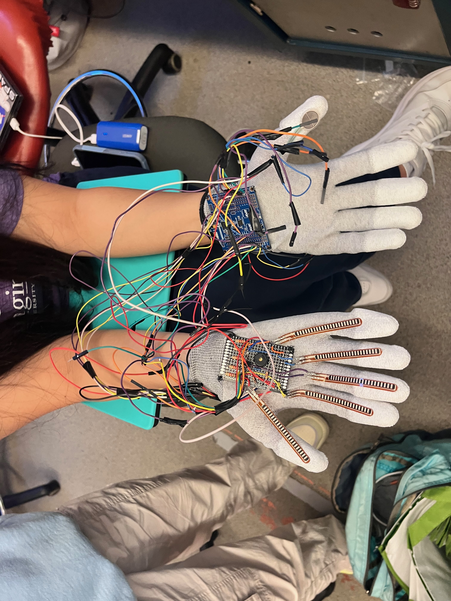
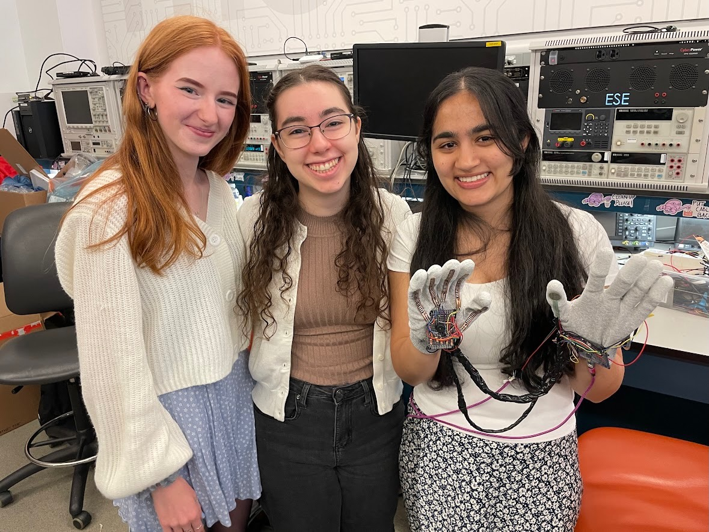
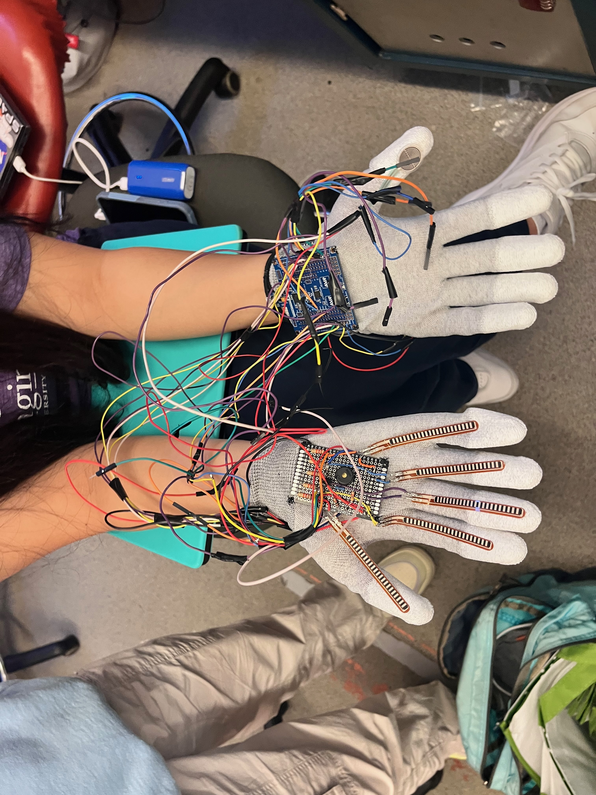

Demo Video
Watch the demonstration of the Abstract Stack Machine below:
Images of Final Product


 



Results
Software Requirements Specification (SRS)
| ID | Description | Validation Outcome |
|---|---|---|
| SRS-01 | The system shall get the current note being played and print the note out on the screen within 1s. | Validated: The screen updates and the note plays well within 1s. |
| SRS-02 | Separate input capture interrupts for each finger to output a note. | Changed: Used ADC thresholds instead of input capture interrupts. |
| SRS-03 | Use a timer to generate a low PWM signal for the buzzer (drum). | Validated: PWM wave at 122 Hz observed on oscilloscope. |
| SRS-04 | Debounce based on finger "down" for 0.5 seconds. | Changed: Used ADC thresholds and stretch/re-bend detection instead of timing debounce. |
| SRS-05 | Voltage across each force resistor analyzed to produce notes. | Confirmed: ADC range thresholds used to reliably detect notes. |
Hardware Requirements Specification (HRS)
| ID | Description | Validation Outcome |
|---|---|---|
| HRS-01 | Five flex sensors detect finger bending for note generation (90° range). | Confirmed: Fully bending fingers triggers notes as shown in demo. |
| HRS-02 | Force-sensitive resistor for drum beat detection (0.2N–10N). | Confirmed: Successfully detected different finger pressures. |
| HRS-03 | Audio breakout board outputs sound (250–1000 Hz). | Validated: Frequencies fall within expected musical range. |
| HRS-04 | Buzzer produces drum sound (30–100 Hz PWM). | Failed to Meet: Buzzer operated at 122 Hz; next time would select different buzzer. |
| HRS-05 | LCD displays current note and beats per minute (BPM). | Validated: Display correctly updates note and BPM (calculated from drum hits). |
| HRS-06 | Gyroscope changes musical note range based on 180° motion. | Changed: Gyroscope used to switch note ranges rather than volume control. |
Conclusion
Throughout this project, our team gained hands-on experience debugging hardware and integrating multiple sensors on a real-time embedded platform. We are proud of our successful integration of the gyroscope, the responsive pressure sensor input for drum beats, and the reliable ADC-based note detection.
We learned how to manage multiple components (flex sensors, gyroscope, pressure sensor) effectively on a single microcontroller. If we were to redo the project, we would focus on stronger soldering and use a different buzzer design. Future improvements could include expanding the musical range and making the drum output sound more realistic using a dedicated soundboard.
References
- LCD Library (Lab 4: Pong)
- I2C Library (custom implementation based on documentation)
- ADC Initialization Code (from class repository)
- UART Library (for validation/debugging, from class repository)